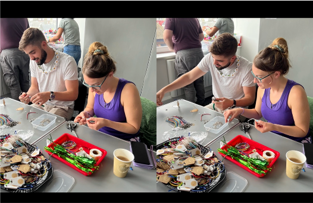
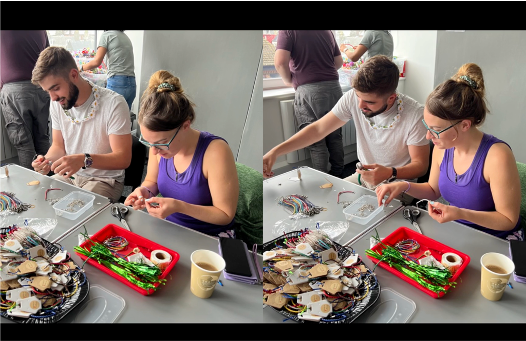

The key to multiculturalism is in
Identifying and Accepting Our Differences
I n today’s interconnected world, the ability to understand and navigate cultural differences is not just a desirable skill—it’s essential for professionals working across borders. Whether managing a team, building partnerships, or resolving conflict, success in international contexts often hinges on more than technical expertise; it requires a keen awareness of how culture shapes behavior, expectations, and communication. Through my participation in the course Cross-Cultural Behavior and Negotiations with Professor Sali Li, I was introduced to critical frameworks that help decode these dynamics, most notably Hofstede’s Cultural Dimensions. This academic foundation was later put to the test during my experiential learning abroad, where I worked with a nonprofit in Scotland serving vulnerable populations. Together, these experiences—one within the classroom and one beyond it—deepened my understanding of how cultural awareness can enhance both negotiation strategies and interpersonal effectiveness. This reflection explores the relationship between theoretical learning and real-world application, highlighting how power distance and cultural fluency played pivotal roles in shaping my international engagement.
I n my course with Sali Li, Cross-Cultural Behavior and Negotiations, I explored how cultural frameworks influence the strategies and outcomes of negotiations in international and organizational settings. One of the most impactful within-the-classroom learning experiences came through our discussion of Hofstede’s Cultural Dimensions, particularly the concept of power distance. Through this lens, I examined how varying levels of comfort with hierarchy and authority across cultures can shape expectations, communication styles, and perceptions of fairness in negotiation. In cultures with high power distance, for instance, negotiators may defer more readily to authority and expect less open disagreement, which contrasts sharply with low power distance cultures that encourage egalitarian dialogue and challenge to status. This concept helped me better understand why negotiation styles and behaviors differ so widely across cultures and highlighted the importance of adapting strategy to fit the cultural context. It became clear that successful negotiation in a global environment requires more than analytical skill—it demands cultural sensitivity, strategic flexibility, and an awareness of deeply embedded social norms.
O ver the summer in France, one of the requirements of my program was to spend a month engaging in work experience to gain a stronger grasp of working in an international context while also contributing to a community of my choosing. I decided to spend my month in Ayrshire, Scotland, working for a nonprofit called RecoveryAyr, which focuses on rehabilitating and supporting individuals struggling with addiction, criminal records, and mental health challenges. This experience pushed me to engage more deeply with a foreign culture without the support system of friends or family nearby.
One of the most tangible artifacts from this experience is a presentation I delivered at ESSEC Business School in Paris, where I defended my experience in a Pecha Kucha format. The presentation included photos from my activities with the group, such as working in a community garden that provided ingredients for a weekly recovery diner, organizing a drug- and alcohol-free concert for recovery communities across Scotland, participating in a Pride parade in Glasgow to support LGBTQ+ members of RecoveryAyr, and preparing for a fundraiser by crafting toys and bracelets to sell.
Scotland has the highest drug-related death rate in the EU, making the fight against addiction a pressing issue. Through this experience, I participated in discussions about legal reforms and community efforts aimed at addressing the crisis. Despite the cultural barriers I initially faced—such as accents, colloquialisms, and workplace norms—I was able to adapt and connect with the community, building strong, trusting relationships within the organization.
M y experience in Professor Sali Li’s classroom laid the foundation for a deeper understanding of the cultural dynamics I would later encounter in Scotland. Hofstede’s framework, particularly the dimension of power distance, proved highly relevant in the context of my work with RecoveryAyr. Although both the U.S. and the U.K. are considered relatively low power distance cultures, subtle differences still emerged in the ways hierarchy, authority, and participation manifested in daily operations. For example, while the nonprofit’s leadership encouraged collaborative input, there remained a reserved and deferential tone in many workplace interactions that felt more hierarchical than what I was used to in American environments. Recognizing these dynamics through a cross-cultural lens allowed me to adjust my communication style, balancing assertiveness with cultural awareness. This connection between theory and practice reinforced that cultural fluency is not only about understanding overt behaviors, but also interpreting the quieter cues that influence collaboration and trust in a multicultural setting.
T ogether, these WTC and OTC experiences offered a well-rounded perspective on how culture shapes negotiation, cooperation, and professional relationships. In the classroom, I developed the vocabulary and frameworks to understand cultural variation; in Scotland, I applied those lessons in real time, often outside my comfort zone. The ability to identify and navigate cultural distance—whether through power dynamics, communication expectations, or social norms—proved invaluable. Moving forward, I feel more equipped to enter international professional environments with both humility and confidence, knowing that effective cross-cultural engagement demands continuous learning, empathy, and adaptability.
- Artifacts -


 
